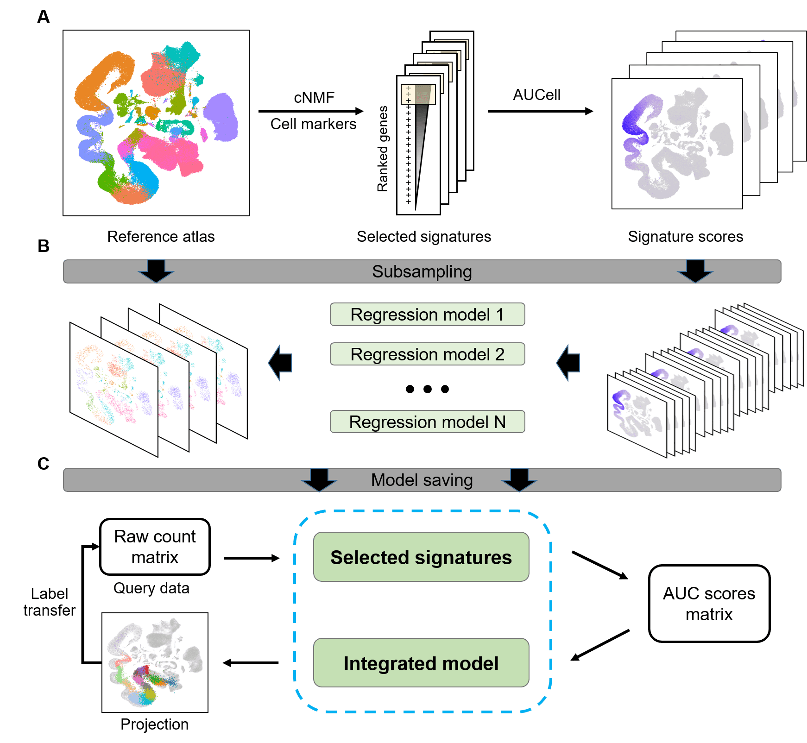

ProjectSVR is a machine learning-based algorithm for mapping the query cells onto well-constructed reference atlas.

Related resources
Reference atlas
The reference cell atlases involved in ProjectSVR paper are available at https://zenodo.org/record/8350746.
Query dataset
The query datasets involved in ProjectSVR paper are available at https://zenodo.org/record/8350748.
Pre-built reference model
You can download pre-build reference models from Zenodo.
| Name | Source | Version | Download |
|---|---|---|---|
| PBMC (DISCO) | https://www.immunesinglecell.org/atlas/blood | 0.2 | download |
| Mouse testicular cell atlas (mTCA) | This paper | 0.2 | download |
| Maternal-fetal interface atlas (Vento 2018) | https://doi.org/10.1038/s41586-018-0698-6 | 0.2 | download |
| Pan cancer tumor infiltrated CD4+ T cell landscape (Zheng 2021) | https://doi.org/10.1126/science.abe6474 | 0.2 | download |
| Pan cancer tumor infiltrated CD8+ T cell landscape (Zheng 2021) | https://doi.org/10.1126/science.abe6474 | 0.2 | download |
Tutorials
The ProjectSVR webpage with all the documentation and tutorials is here.
We have various examples, including:
A generic quick start tutorial on a demo PBMC scRNA-seq dataset.
Tutorials on how to build projection models for reference atlas.
Tutorials on how to project the query datasets onto reference atlas via pre-build models.
A tutorial on how to train a model to predict pseudotime.
A tutorial on how to train a multi-classifier for cell type auto annotation.
Installation
Install the development version from GitHub use:
install.packages("devtools")
devtools::install_github("JarningGau/ProjectSVR")ProjectSVR has been successfully installed and test on ubuntu, centOS and wsl2.
External packages
Install AUCell or UCell for signature score calculation.
## install UCell
# R = 4.3
BiocManager::install("UCell") # or
# R < 4.3
remotes::install_github("carmonalab/UCell", ref="v1.3")
## install AUCell
BiocManager::install("AUCell")We provided a wrapper RunCNMF of python pacakge cnmf for feature selection. If you want to use it, you should install cnmf through reticulate.
install.packages("reticulate")
reticulate::install_miniconda()
## install sceasy for single cell data format transformation.
devtools::install_github("cellgeni/sceasy")
reticulate::py_install("anndata")
## install cnmf package via reticulate
reticulate::py_install("cnmf")Code of Conduct
Please note that the ProjectSVR project is released with a Contributor Code of Conduct. By contributing to this project, you agree to abide by its terms.